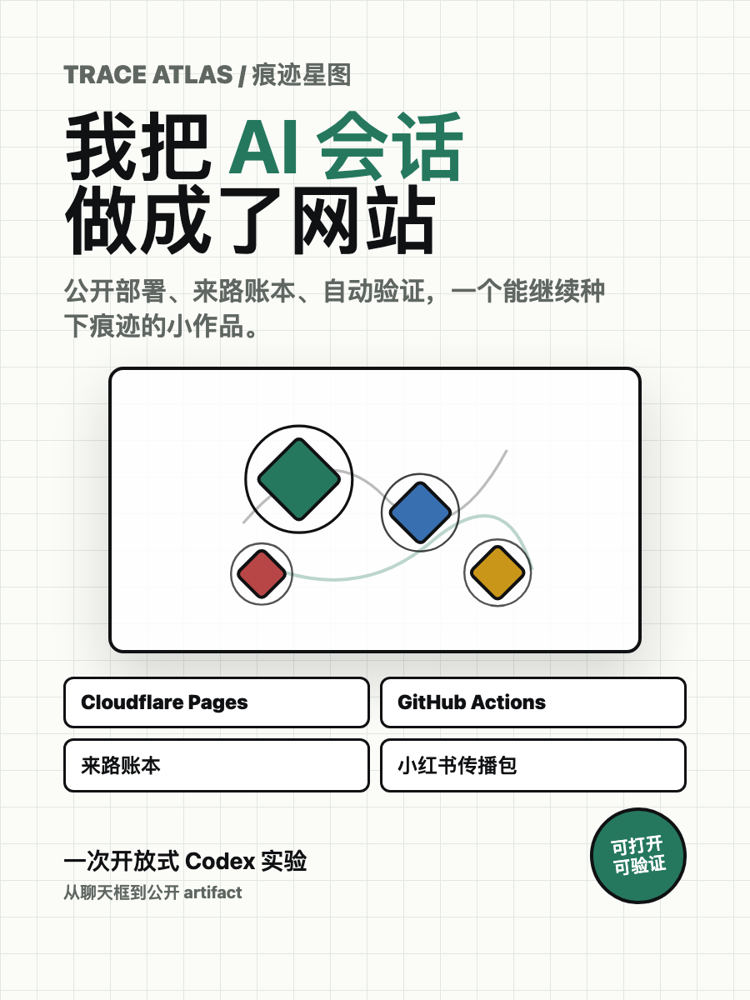
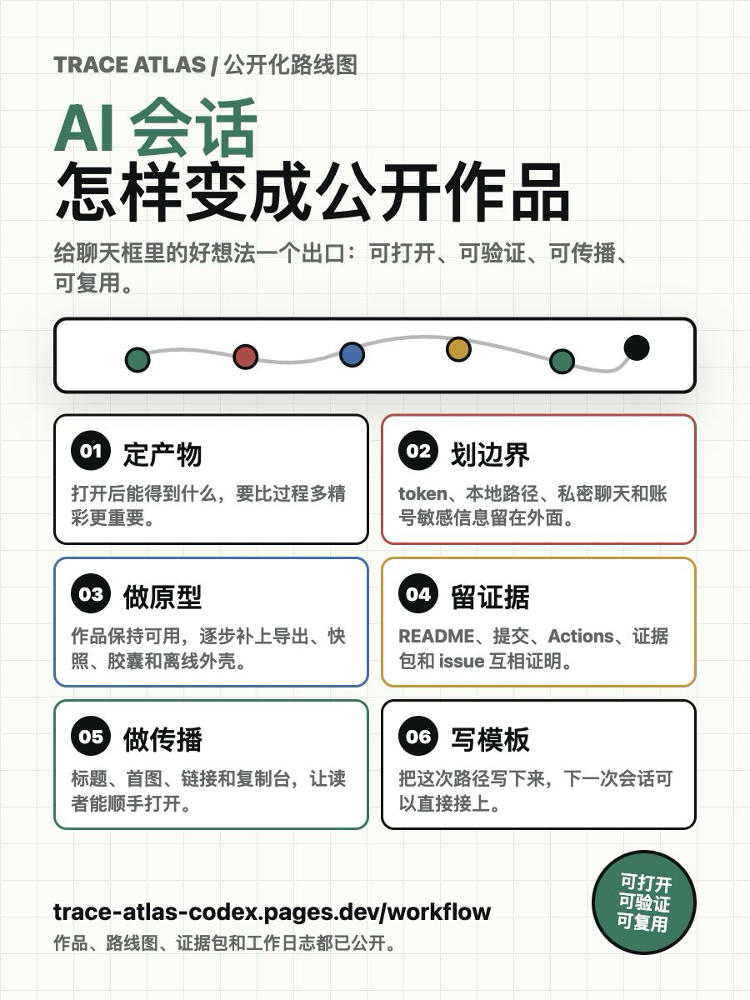
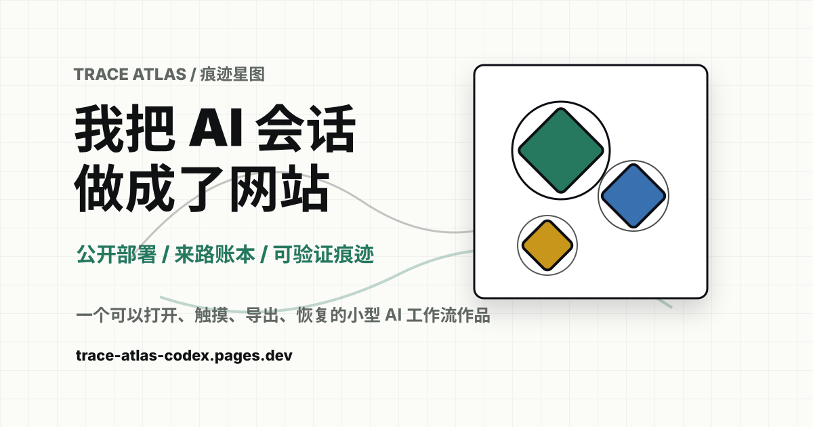

小红书首图
900 × 1200 封面
用于第一张图，直接说明“我把 AI 会话做成了网站”。

下载封面 PNGTrace Atlas / 痕迹星图
这里集中放置面向中文传播的首图、分享卡、正文草案、复用模板、证据包和验证入口。
小红书首图
用于第一张图，直接说明“我把 AI 会话做成了网站”。

下载封面 PNG路线图长图
用于第二张或第三张图，解释“AI 会话公开化”到底怎么做。

下载路线图 PNG网页分享卡片
用于 Open Graph 和链接预览，让公开页面被转发时有明确视觉。

打开分享卡 SVG推荐标题
短、直观，第一眼就知道产物是什么。
主公开链接
验证入口
证据包
工作日志
推荐标签
#AI工具 #内容创作 #CloudflarePages
复制台已就绪。
发布前检查